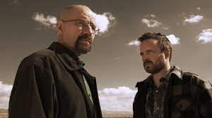

Las series que más me han gustado, entre otras, son Breaking bad y Cyberpunk Edgerunner
Estas series han sido muy populares en Netflix
Como curiosidad, breaking bad al inicio no era muy conocida y casi se cancela, pero al llegar a la tercera temporada, subio a un ritmo increible
| Breaking Bad salió en 2008 y terminó en 2013, en total duró 5 años y tuvo 5 temporadas en las cuales no ha tenido ni un episodio con puntuación negativa, teniendo una valoración de 9/10 en páginas como FilmAffinity, llegando a ser una de las series favoritas de muchos usuarios. |  |
| Cyberpunk Edgerunner es una serie de animación que salió en 2022 y viene de el juego Cyberpunk 2077. Esta serie subió rapidamente a los puestos populares y ayudo a que el juego fuera otra vez reconocido y admirado. Tiene una calificación de 8/10 en FilmAffinity. | |
Pincha aquí para volver